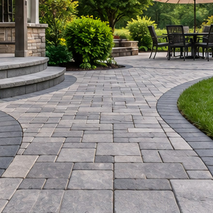

← Back to HomeServices

Landscaping projects can range from a small garden walkway to a complete outdoor living area. The best starting point is understanding the work involved and the practical questions to ask.
Explore the services below. For paver installation and retaining walls, detailed guides explain common project options. Other enquiries can be discussed by telephone; the Free Estimates page explains what to have ready before calling.
Paver Installation
Pavers can create durable, repairable surfaces for patios, driveways, entry paths, pool decks and gathering spaces. Product selection, edge restraint, compaction, base depth and drainage must suit the specific location.
Read the paver installation guide →Patios and Walkways
Patios provide space for dining and relaxing, while walkways connect entrances, gardens and outdoor features. Surface texture, slope, joint materials, accessible routes and transitions between surfaces all influence the design.
See patio and walkway paving →Driveway Paving
Driveways must accommodate vehicle loading, turning movements and surface water. Pavers and other paving materials have different installation and maintenance requirements; a local provider can discuss options for your site.
Explore driveway pavers →Retaining Walls
Retaining walls can manage grade changes, support raised landscape areas or define terraces. Drainage, height, soil conditions and nearby structures can make engineering or permits necessary.
Read the retaining walls guide →Custom Stone and Veneer
Stonework and veneer can add texture to steps, columns, landscape walls and outdoor living features. A suitable substrate, weather exposure, compatible materials and detailing are important to lasting results.
Ask about stonework →Outdoor Kitchens and BBQ Areas
An outdoor kitchen may include a grilling station, preparation surfaces, storage, seating and weather-tolerant finishes. Designs should account for ventilation, utilities, clearances, safe placement and the way the space will be used.
Ask about an outdoor kitchen →Outdoor Fireplaces and Fire Pits
Outdoor fire features can provide a focal point for seating and entertaining. Fuel type, local restrictions, setbacks, ventilation and distances from combustible materials should be reviewed before choosing a design.
Ask about fire features →Paver Cleaning and Sealing
Cleaning can remove common buildup, while an appropriate sealer may help with staining and surface appearance. Not every paver should be sealed in the same way; existing condition, manufacturer instructions and joint integrity matter.
Ask about paver care →Excavation and Site Preparation
Excavation may be needed before paving, walls, drainage improvements or new outdoor features. Underground utilities, access, grading, soil disposal and erosion control need attention during planning.
Ask about site preparation →Low-Voltage Landscape Lighting
Low-voltage lighting can guide people along paths, highlight steps and add emphasis to planting or masonry. Fixture placement, glare control, cable routing, weather exposure and maintenance affect the final layout.
Ask about outdoor lighting →Pool Decks and Outdoor Living Areas
Poolside surfaces should be selected with slip resistance, drainage, heat exposure and pool-edge details in mind. Wider outdoor living projects may bring together paving, walls, lighting and gathering areas.
Read about pool deck pavers →These are general service categories, not promises that a particular contractor or service is available. Independent providers handle suitability, quotes and scheduling.